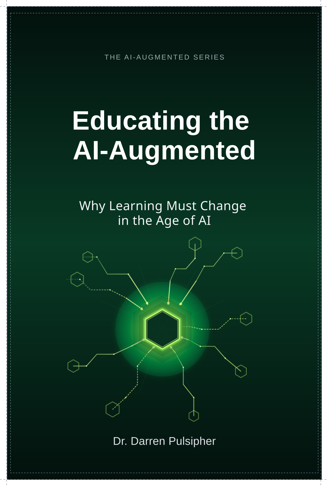

Practical Blueprints
No theory-only chapters. Every page is designed to help you make better decisions and build more reliable workflows immediately.

Paidar.ai books provide the shared language, operating discipline, and practical frameworks leaders need to move AI from experimentation into reliable execution.
Use this hub when you want structured guidance before or alongside an assessment, workshop, or advisory engagement. Each title is designed to help a specific audience build better judgment, stronger operating habits, and more reliable AI-enabled work.
AI transformation often fails because it lacks a shared language and a proven operating model. Most organizations are either over-relying on AI output or under-utilizing its potential due to a lack of trust.
The AI-Augmented Operating System (AAOS), detailed across these volumes, provides the discipline required for reliable execution. These books move you past the hype and into the practical mechanics of becoming an AI-augmented leader and organization.
No theory-only chapters. Every page is designed to help you make better decisions and build more reliable workflows immediately.
Based on the AAOS framework used by Paidar.ai to transform enterprise operations, higher education, and public sector execution.
The operating discipline behind the books.
Turn the book language into team practice.
Use the books as a baseline for strategy sessions.
The foundational series for individual, team, and organizational transformation.

Multiply your expertise in the age of AI. Build personal judgment and master the transition to AI-enabled professional operations.

How teams deliver reliable, defensible results with AI. Transition from inconsistent AI use to a stable operating model that ensures repeatable high-performance delivery.

Scale one standard across the enterprise. Align your organization under a consequence-aware operating baseline that enforces consistency without sacrificing speed.
Specialized frameworks for the future of learning and academic integrity.

Championing real learning in the age of AI. Move from grading products to verifying learning journeys that ensure students build deep domain expertise.

Building the AI-Augmented Operating System for Education. Scale AI augmentation across your institution with a strategic framework covering classrooms to district policy.